young fulani boy
I met him and his herd of cows at the first light of the day. Some of the cows trot past him, while others munch on the green grass glistening from the early morning dew behind him. There’s a tranquil pooling in his big black -or brown- eyes. Except for the rising sun, and the cows scattered and chewing mindlessly in this field, we are alone here. I am curious about him. I assume he is just as curious about me with the way he looks at me from his side-eye. He tells me he was born in Ibadan and his family has moved around Oyo State a lot since his birth, even though he is Fulani. He speaks the Yoruba and Hausa languages fluently. His family’s major source of income is selling goats, sheep and cows. In Nigeria, the wealth of a Fulani herdsman is measured by the size of his herd. I think a male older family member must be close by, with the rest of the herd, as I count 12 - 15 cows with him.
The Fulani herdsmen are nomads, who move from one place to another in search of greener pastures for their cattle. In Nigeria, most people only think about the Fulani-herdsmen clash when they meet the Fulanis. Since the Fulani-herdsmen violence started in 1999, hundreds and thousands of people have died while thousands of people have been displaced. The violence is said to have started as a result of the land conflicts between farmers and herdsmen, and while some people believe that it is an ethnic/tribal war, in recent times, this violence has tripled based on ethnoreligious conflicts, as most of the clashes has been between Muslim Fulani herdsman and Christians farmers.
Standing in the field with him, while egrets hovered over the cattle and perched in the grass, I realized he is just a boy.
 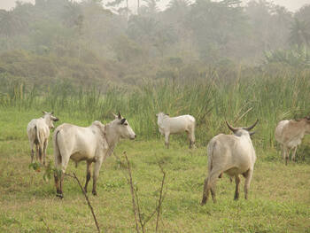
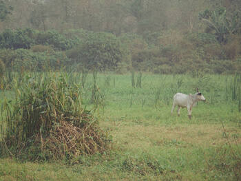
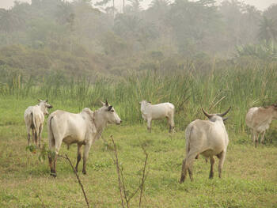
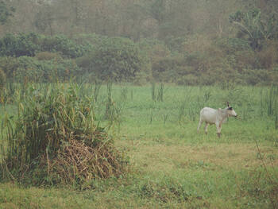
 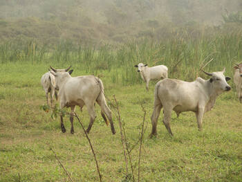
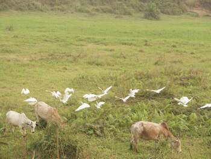
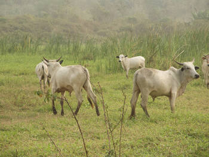
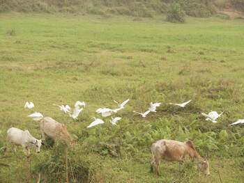
 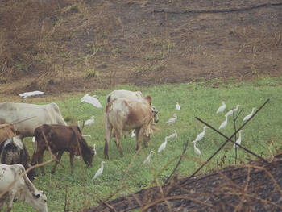
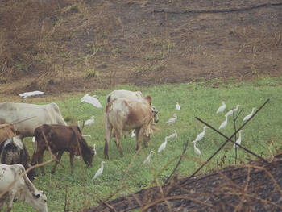

 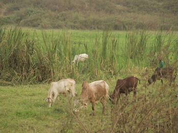
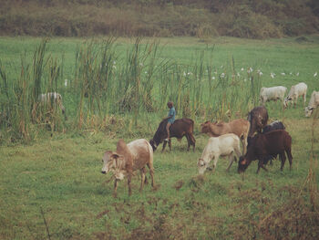
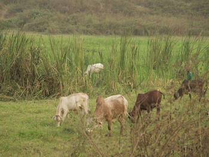
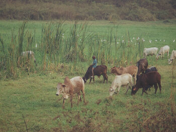